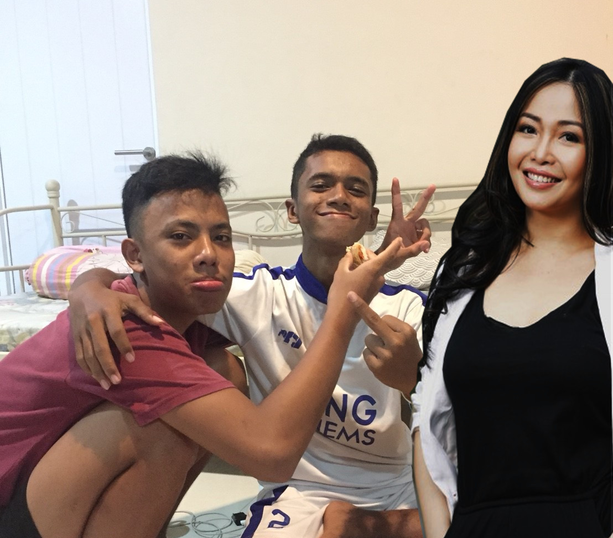

My Biodata
Nama : Zaeni Fikri Maulidin
TTL : Bogor, 26 Juni 2001
Alamat : Perumahan Ziara Valley Bogor Block F No.2.
Hobby : Travelling.
Sekolah : SMK-SMAK Bogor
Pesan : Jangan pernah bermalas-malasan dengan diri kita, karena penyesalan selalu datang diakhir.
Motto : Tolong menolong harus selalu ada didalam diri kita.
My Hobby
Travelling
Travelling menjadi hobi saya yang baru, karena travelling itu snagat mengasyikan dapat menjelajahi alam terbuka,menikmati ciptaan Yang Maha Kuasa dan harus selalu menjaga nya dengan baik.Travelling juga dapat menemukan teman-teman baru sekaligus dapat menjelajahi alam-alam di Indonesia ini dengan bersama-sama.
Makan
Makan merupakan suatu kebutuhan yang dibutuhkan oleh makhluk hidup yang dilakukan minimal tiga hari sekali, makan dapat membuat kita senang tanpa makan selama tiga hari berturut-turut kita dapat meninggal.
please call me
Don't forget to follow and add my social media ok!!!

: zaenifikri@gmail.com
: @obeds514

: @zaenifikrim
: 08158546XXXX
hello stalker!
let's read!
Assalamualaikum kawan, perkenalkan nama saya Zaeni Fikri Maulidin. Saya anak kedua dari 3 bersaudara, Kakak saya dengan saya hanya beda umur 3 tahun sekarang dia sedang mengikuti tes Sekolah Calon Bintara atau biasa disebut SECABA, alhamdulilah dia kemaren baru saja lolos tes kesehatan, adik saya berumur 11 tahun yang masih duduk di bangku Sekolah Dasar dia adik yang pintar seringkali dapat juara kelas walaupun hanya 10 besar, dan yang terakhir tak lupa kedua orang tuaku yang mendidikku dengan baik sampai saat ini.
Ini riwayat pendidikan saya, waktu SD saya bersekolah di SDN Cipaku Perumda lalu pindah sekolah waktu kelas 4 sd pindah ke SDN Margajaya 1, saat SMP saya bersekolah di SPMN 14 Bogor, dan sekarang saya bersekolah di sekolah yang sangat luar biasa yaitu SMK-SMAK Bogor. Saya sekolah di SMAKBO karena selain bisa langsung mendapat kerja setelah lulus, saya juga ingin lebih memperdalam bidang Ilmu Kimia, awal daftar di SMAKBO saya tau dari teman bapak saya setelah mendapat formulir pendaftaran SMAKBO saya disuruh minta tandatangan Kepala Sekolah SMP saya sebelum minta tandatangan Kepala Sekolah nya saya bertemu dengan guru Inggris smp saya awalnya dia tidak yakin saya daftar ke SMAKBO singkat cerita akhirnya saya diterima di SMAKBO dan guru Inggris saya pun tidak percaya dan kaget bahwa saya diterima di SMAKBO ini.
Saya Memiliki Hobby yang sedikit mainstream, yaitu travelling bersama-sama teman saya kadang teman sekolah sekarang kadang juga dengan teman smp saya ketika libur panjang tapi seringkali pergi dengan teman sekolah sekarang yang waktu liburan pasti bareng, sedangkan dengan teman smp waktu libur tidak selalu bareng. Tempat yang sudah pernah saya kunjungi adalah kebanyakan pantai mulai dari Pantai carita, Pelabuhan Ratu,Pantai Anyer, dan kemaren yang paling jauh adalah Pantai Pameungpeuk yang terletak di Kabupaten Garut. Perjalanan kesana sungguh melelahkan tapi mengasyikan kita dapat pengalaman yang baru, sampai di Pantai kira-kira pukul 10 malem dan kami langsung membangun tenda kami di pinggir jalan bukan di samping pantainya.
Saya membuat blog ini karena tuntutan tugas dari lab KKPI untuk pengambilan nilai UTS, so maafkan saya jika tampilan dari blog ini sangat membosankan dan berantakan. sekian cerita singkat dari saya, see you next time guys.